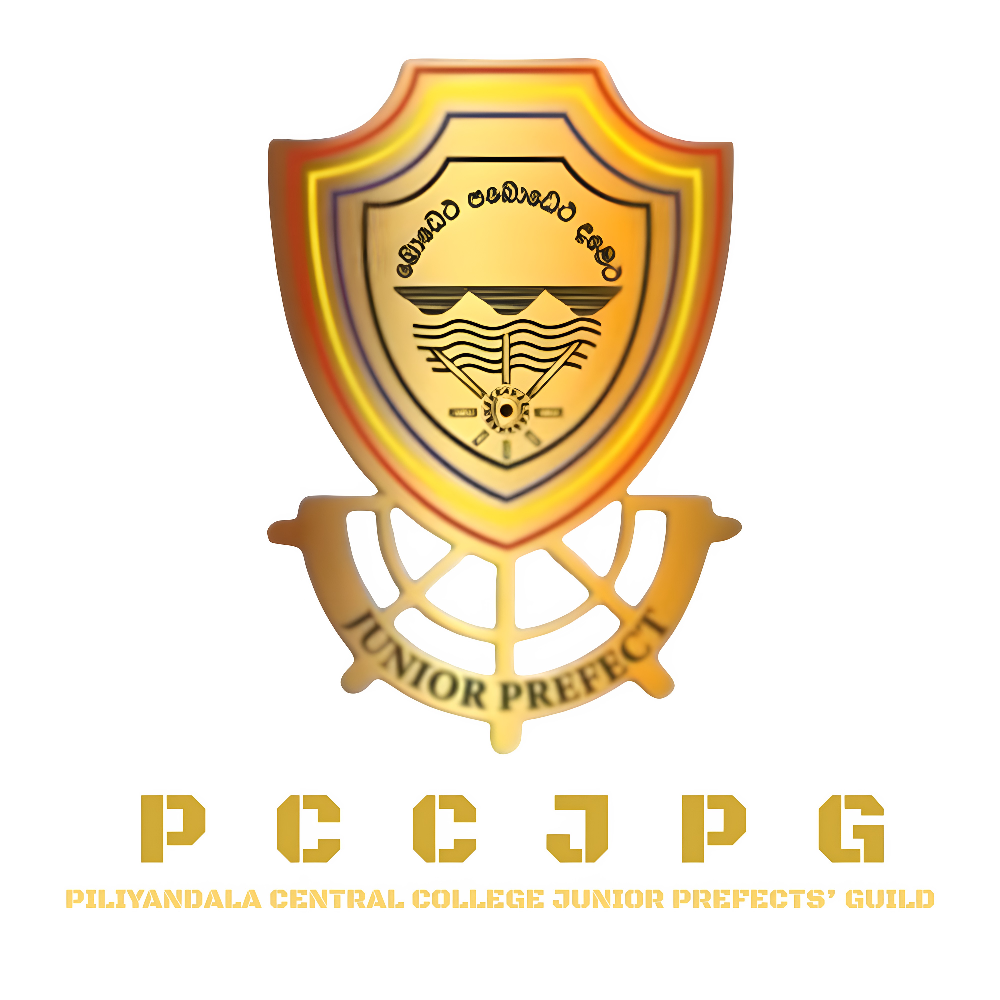

Welcome to the digital gateway of the Junior Prefects' Guild of Central College Piliyandala. This platform reflects our journey, objectives, and ongoing dedication to serving our alma mater with honor and accountability.
Driven by the core ideals of our college motto, "Bodetha Pabodetha Dametha" (Awareness, Enlightenment, and Discipline), the Guild functions as an essential pillar of student leadership, maintaining administrative order and reinforcing moral integrity within the student body.
The operational framework of the Junior Prefects' Guild is designed around three strategic areas of responsibility:
Ensuring day-to-day adherence to school codes, supervising morning assemblies, and managing mid-day intervals smoothly across all grade structures.
Acting as an accessible, trusted bridge between general students, senior student leaders, and the administrative faculty to voice concerns.
Fostering basic skills in event planning, public communication, crowd safety, and critical coordination by managing major school events.
The execution of duties and student governance within the Junior Guild is guided by our primary student executive committee:
Lead Operations Executives
Overseeing strategic planning, administrative alignment, and full guild disciplinary coordination.
Sectional Command Leaders
Supervising daily duty allocations, morning check-ins, and emergency stand-by assignments.
Records & Logistics Management
Managing logs of general attendance, standard duty sheets, official records, and resource distribution.
Published: June 2026
All junior guild members are advised to inspect the physical notice boards or the digital portal guidelines for refreshed morning corridor duty logs and gate tracking rosters.
Scheduled: June 2026 (Poson Full Moon Poya Day season)
In commemoration of the historic arrival of Arahat Mahinda Thero to Sri Lanka, Piliyandala Central College will host its annual Poson Bathi Gee Saraniya devotional song festival at the school main hall.
Organized in collaboration with the Aesthetic Studies Department, the Junior Prefects' Guild will be actively spearheading crowd management, safety zoning, and traditional lantern lighting arrangements. All students, parents, and old boys are welcome to join this evening of spiritual enlightenment and cultural devotion.
View Event Details →